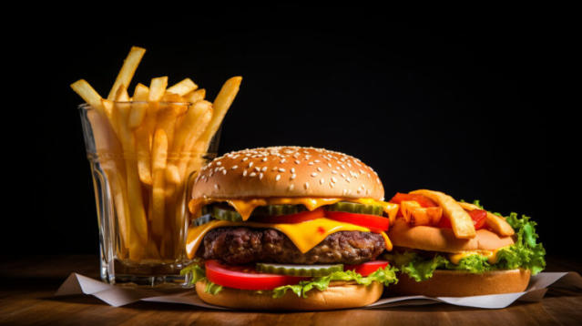

Welcome to Karachi Fast Foods - Where Flavor Meets Speed!
At Karachi fast foods, we believe that good food doesn't have to take forever. We understand the hustle and bustle of modern life, and that's why we're here to serve you mouthwatering meals with the speed you crave.
Our Story:
Established in 2023, Karachi fast foods started as a dream shared by a group of passionate food enthusiasts. Fueled by a love for flavor and a commitment to convenience, we embarked on a journey to redefine the fast-food experience. Today, we proudly stand as a beacon of quick, tasty, and satisfying meals.
Quality Ingredients, Unmatched Taste:
We take pride in sourcing only the finest, freshest ingredients for our menu. From locally-sourced produce to premium meats, each item is carefully chosen to ensure every bite is a burst of flavor. Our chefs work tirelessly to craft a menu that caters to diverse tastes while maintaining the quality you deserve.
Commitment to Community:
At Karachi fast foods, we believe in giving back to the community that supports us. We actively participate in local events, sponsor community initiatives, and strive to be a responsible corporate citizen. Your patronage helps us contribute to the neighborhoods we serve.
Your Satisfaction, Our Priority:
Customer satisfaction is at the core of our values. We continually strive to enhance your dining experience, whether you're grabbing a quick bite on the go or enjoying a meal with friends and family. Our friendly staff is dedicated to making sure you leave with a smile.
Stay Connected:
Join our community on social media to stay updated on the latest promotions, new menu items, and behind-the-scenes glimpses of the Karachi fast foods kitchen. Your feedback is invaluable, and we love hearing from our customers.
Thank you for choosing Karachi fast foods - your go-to destination for quick, delicious, and memorable fast-food experiences. We look forward to serving you soon!